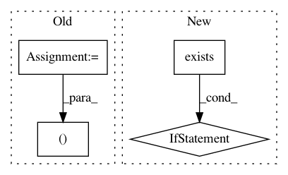

0bc1db58d82c2482bfac1e32a3a43cfd5a533da2,utils/google_utils.py,,attempt_download,#,19
Before Change
except Exception as e: // GCP
print("Download error: %s" % e)
assert redundant, "No secondary mirror"
url = "https://storage.googleapis.com/ultralytics/yolov3/ckpt/" + file
print("Downloading %s to %s..." % (url, weights))
r = os.system("curl -L %s -o %s" % (url, weights)) // torch.hub.download_url_to_file(url, weights)
finally:
if not (os.path.exists(weights) and os.path.getsize(weights) > 1E6): // check
os.remove(weights) if os.path.exists(weights) else None // remove partial downloads
After Change
// Attempt file download if does not exist
file = Path(str(file).strip().replace(""", "").lower())
if not file.exists():
response = requests.get("https://api.github.com/repos/ultralytics/yolov3/releases/latest").json() // github api
assets = [x["name"] for x in response["assets"]] // release assets ["yolov3.pt", "yolov3-spp.pt", ...]
name = file.name
if name in assets:
msg = f"{file} missing, try downloading from https://github.com/ultralytics/yolov3/releases/"
redundant = False // second download option
try: // GitHub
tag = response["tag_name"] // i.e. "v1.0"
url = f"https://github.com/ultralytics/yolov3/releases/download/{tag}/{name}"
print(f"Downloading {url} to {file}...")
torch.hub.download_url_to_file(url, file)
assert file.exists() and file.stat().st_size > 1E6 // check
except Exception as e: // GCP
print(f"Download error: {e}")
assert redundant, "No secondary mirror"
url = f"https://storage.googleapis.com/ultralytics/yolov3/ckpt/{name}"
print(f"Downloading {url} to {file}...")
os.system(f"curl -L {url} -o {file}") // torch.hub.download_url_to_file(url, weights)
finally:
if not file.exists() or file.stat().st_size < 1E6: // check
file.unlink(missing_ok=True) // remove partial downloads
print(f"ERROR: Download failure: {msg}")
print("")
return
def gdrive_download(id="16TiPfZj7htmTyhntwcZyEEAejOUxuT6m", file="tmp.zip"):
// Downloads a file from Google Drive. from yolov3.utils.google_utils import *; gdrive_download()
t = time.time()
file = Path(file)
In pattern: SUPERPATTERN
Frequency: 3
Non-data size: 4
Instances
Project Name: ultralytics/yolov3
Commit Name: 0bc1db58d82c2482bfac1e32a3a43cfd5a533da2
Time: 2021-01-10
Author: glenn.jocher@ultralytics.com
File Name: utils/google_utils.py
Class Name:
Method Name: attempt_download
Project Name: xinntao/BasicSR
Commit Name: 29ab5e1965503be3ffe87462e973edf1d457af6e
Time: 2018-09-06
Author: wxt1994@126.com
File Name: codes/scripts/extract_subimgs_single.py
Class Name:
Method Name: main
Project Name: astroML/astroML
Commit Name: a1292078d2016dff4228fff869430ab4ace79b6b
Time: 2019-01-04
Author: bsipocz@gmail.com
File Name: astroML/datasets/sdss_corrected_spectra.py
Class Name:
Method Name: fetch_sdss_corrected_spectra